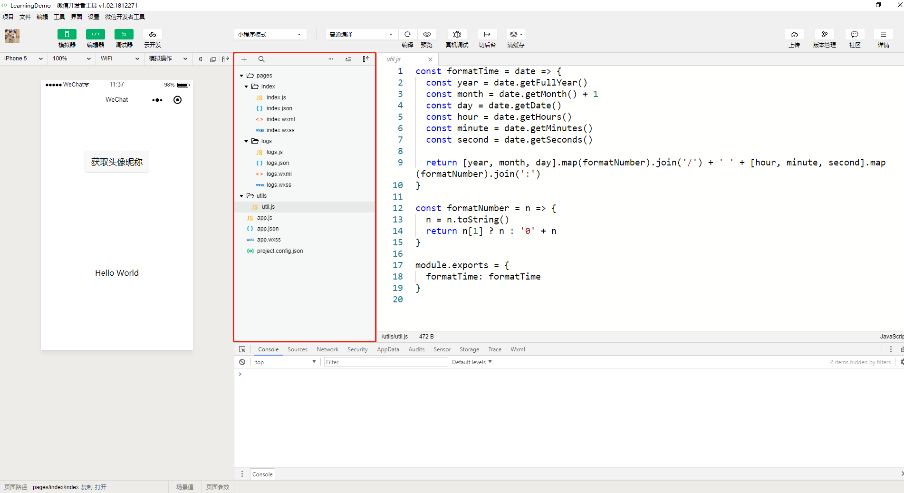

小程序由配置代码JSON文件、模板代码 WXML 文件、样式代码 WXSS文件以及逻辑代码 JavaScript文件组成。通过创建一个快速模板，来了解这几种文件的作用。
创建项目选择"建立普通快速启动模板"，进入项目后，可以看到以下的项目目录结构：

Json配置文件
在根目录下可以找到 app.json 文件，代码如下：
1 | { |
JSON文件是静态配置，小程序是无法在运行过程中去动态更新JSON 配置文件从而发生对应的变化的。
WXML文件
WXML 全称是 WeiXin Markup Language，是小程序框架设计的一套标签语言，结合小程序的基础组件、事件系统，可以构建出页面的结构。
找到app.json文件，在pages下填加一行：
添加完后，会自动生成wxml目录，并且对于生成四个文件index.js,index.json,index.wxml,index.wxss
其中index.wxml的内容如下：
1 | <!--pages/wxml/index.wxml--> |
简单的 WXML语句在语法上同 HTML 非常相似。需要注意的是，WXML中的属性是大小写敏感的，也就是说 class 和 Class 在WXML中是不同的属性。
示例：
1 | <!--一个简单的文本标签 --> |
WXML 语言提供了数据绑定的功能，可以在用户界面动态地展示数据。